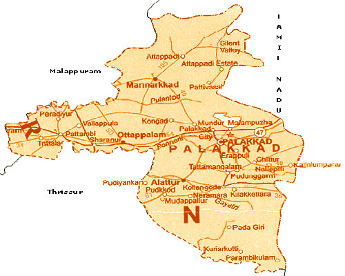

PALAKKAD
Palakkad District, in the southeastern part of the former Malabar district, is one of the 14 districts of the South Indian state of Kerala. It is located right at the central part of the state. Also, it is the largest district in Kerala from 2006. The city of Palakkad is the district headquarters. Palakkad is bordered on the northwest by the Malappuram District, on the southwest by the Thrissur District, on the northeast by The Nilgiris District, and on the east by Coimbatore district of Tamil Nadu. The district is 24.4% urbanized according to the census of 2011.The district is nicknamed "the granary of Kerala". In 2006 the Ministry of Panchayati Raj named Palakkad one of the country's 250 most backward districts out of a total of 640. 
Tourist places

Nelliyampathy
Nelliyampathy Hill Station: This fascinating hill station is at a height of 467 to 1,572 m above sea level. This hilly village is the delight...

Palakkad Fort
Palakkad Fort: (Open 0800-1800 hrs) The old fort situated in the very heart of Palakkad town is one of the…

Parambikulam
Parambikulam Wildlife Sanctuary: (98 km from Palakkad) Sprawled across 285 sq.km, the Parambikulam Wildlife sanctuary is home to many